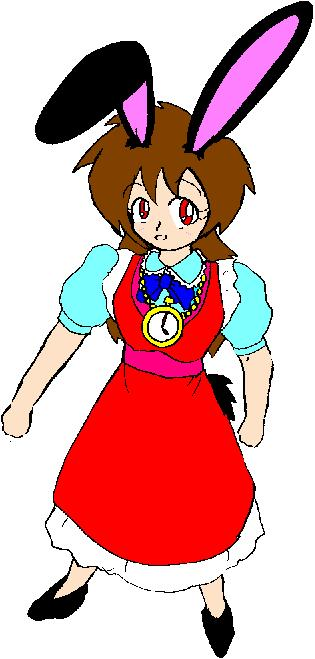

——華代ちゃんシリーズ＆いちごちゃんシリーズＷ外伝——
（ハンターストーリーランド＋α その３）
「半田姉妹の冒険？」
作：Zyuka
※「華代ちゃん」シリーズの詳細については、以下の公式ページを参照して下さい。
http://www.geocities.co.jp/Playtown/7073/kayo_chan00.html
＊「華代ちゃんシリーズ・番外編」の詳細についてはhttp://www.geocities.co.jp/Playtown/7073/kayo_chan02.html を参照して下さい
※「いちごちゃん」シリーズの詳細については、以下の公式ページを参照して下さい。
http://www.geocities.co.jp/Playtown/7073/Novels-03-KayoChan31-Ichigo00.htm
俺は「ハンター」だ。
不思議な能力で “依頼人” を性転換しまくる恐怖の存在、「真城 華代」の哀れな犠牲者を元に戻す仕事をしている。
最終的な目標は、「真城 華代」を無害化することにある。
とある事件——というか「華代被害」——に巻き込まれた今の俺は、１５〜６歳くらいの娘になってしまっている。その上、ひょんなことから「半田 苺（はんた・いちご）」を名乗ることになってしまった。
華代の後始末の傍ら、なんとか元に戻る手段も模索している。
さて、今回のミッションは……
ガタン、ゴトン、ガタン、ゴトン……
電車の中である。
その電車のある車両……そこに、ティーシャツにジーンズ、ポニーテールの美少女が乗っていた。
ハンター１号こと、半田いちごである。
今日のいちごのミッションはちょっと遠くの町まで行かなければいけないのだ。
そのための電車利用である。
４連休の２日目であることや、女性専用車両であることもあいまって、いちごの周りにほとんど乗客はいない。隣に、新聞を広げて座っている少女ぐらいだ。
「なあ……」
「何？」
いちごは、思いあまってその少女に声をかけた。
「その姿……かなり違和感があるんだが……」
「仕方ないだろ！」
新聞を読んでいたのは、どう見ても小学生低学年くらいの女の子だ。
かわいらしい服装で長いスカートを履いている。頭の上の大きなリボンがついた帽子が、誰かを思い出させるが……これは少女の秘密を隠す物である。
「俺はこれでもれっきとした大人なんだ！ これくらいの新聞くらい読める！！」
「頭ではわかってるんだけどな……」
いちごの隣に座る少女の名は半田りく。
いちごの同僚、ハンター６号のコードネームを持っている人物だ。
いちご同様、このりくも華代被害者であった。そう、元男なのだ。
今でこそ、小学生くらいの女の子だが、中身はれっきとした大人。
見た目は子供、頭脳は大人というどこかで聞いたフレーズを地で行く人物だった。
それゆえ、新聞を読むことぐらいはできるのだ。
「それとも何か？ この俺に椅子にひざを突いて『うわあお外に色々な物がある』とでも言えというのか？」
「それは……ま、しかたないか」
そうぼやいて、いちごはもっていた雑誌の続きに目を落とした。
ぷしゅうぅ〜〜……
電車が止まり、何人かが乗り込んでくる。
いちご達の目的は、別の駅。この駅にも乗客にも興味はない。が……
「あれ？ いちごちゃんじゃない？」
「へっ？」
ブラウスに真っ赤なリボン、膝下までの長さのプリーツスカート。紺色のブレザーに校章って、乗ってきた乗客にそのような姿の物はいない。
だがいちごは彼女達三人を見た瞬間、それを思い出した。
かつていちごがとある任務で通っていた女子校……そこでクラスメイトだった少女たちだ。
「本当だ。いちごちゃんだ」
「久しぶり。何で黙って転校しちゃったの？」
「心配していましたぁ」
赤龍寺 姫子…どっかの財閥のお嬢様。
南 亜貴奈……スポーツ万能少女。
磯野 愛美……ある意味天然、ある意味なんか鋭い？
かつて、華代ちゃんの大量性転換現象に巻き込まれ『理想の男性』に変身させられた事があったが、今はもう元に戻っている。まあ、その記憶は無いだろうけど……
「知り合いか？ いちご？」
事情を知らないりくが、いちごに問い掛ける。
「……この子は？」
亜貴奈がりくを見て言う。
「え、あ、その……」
「かわいいお嬢ちゃん、お名前は？」
愛美はりくが気に入ったようだ。
「え、ああ……俺は、りく…半田りく」
「半田、りくちゃん？」
「あれえ、もしかして、いちごさんの妹さんですかぁ？」
「いや、その……」
「でもぉ、お姉ちゃんの事を呼び捨てにしたり、俺なんて言葉使いを使ってるってことはぁ、いけないとおもうよ」
「わたくしが、正しい言葉使いを教えてあげましょうか？」
「え、ええと、その……」
「あ、もしかしてお父さんの口真似をしてるんですかぁ？ それなら、うなづけますぅ」
りくは、女子高生達のパワーにたじたじになってしまう。
「あ、あの、みんなどうしてここに？ 私達は次の駅で降りなきゃならないんだけど……」
このいちごのセリフはでまかせだった。女言葉になれているいちごと違い、りくはそうではない。
「あ、やっぱり」
「へ？」
「いちごちゃんたちも行くんでしょ？ 冬の新作ドレス発表会」
「ええっ！？」
「そんなものがあるの？」
「妹さんにはちょっと早いかもしれないけどね」
女子高生達はりくを完全にいちごの妹と思い込んでいるようだ。
無常にもその時、電車は駅についてしまう。
「さあ、いきましょう」
三人の女子高生に引きずられる形で、いちごとりくは電車を降りた。
「その情報、間違いないな？」
大柄な男が言う。
「ええ、ターゲットは今回のショーにきます」
やせた男が言う。
「誘拐して、身代金、ガッポガッポ」
太った男がそう言う。
彼らの前には、ある少女の写真があった。
「うわぁ、いっぱいいますねぇ」
「本当、どこから来ているのかしら？」
何でも、デザイナーの中でもカリスマと呼ばれる人物が主催するファッションショーらしい。
彼女のファンである女性達が大挙して押し寄せてきていたのだ。
「いこ。いちごちゃん。りくちゃん」
姫子、亜貴奈、愛美の三人に引きずられる形で、いちごとりくもその集団に入り込んでしまった。
「いたぞ。追跡する」
「目立たぬように」
「誘拐して、身代金、ガッポガッポ」
って、女性の集団の中にでかい男三人が紛れ込んでいたら、目立つって。
だが、彼らはどうにかターゲットに近づくことができた。
「赤龍寺姫子さん、ですね？」
「はい、そうですけど…？ あなたたちは？」
「誘拐犯です。いっしょに来てもらいましょう」
「はぁ？」
五人の少女の前に現れた怪しい男三人。そして誘拐とか言っているこの状況。
「はいそうですかって、言うとお思いですか？」
「仕方ありませんね。では、腕ずくで」
といって、男達が姫子にむかって襲いかかる。
「待てよ、お前ら！！」
しかし、ここにこんな事態を黙っていられない人物がいた。
言うまでもなく、いちごである。
「どけ、小娘！！」
「駄目だ、いちごちゃん！」
誘拐犯Ａと亜貴奈が同時に叫ぶ。
ドスッ！！
いちごは、押しのけようとした相手の腕を取り、思いっきり分投げた。
「なぁ！？」
驚く誘拐犯Ｂ……と、その上に黒い影が舞い落ちる。
ドカン！！
「りくちゃん！？」
「ま、これくらいはしないとね」
誘拐犯Ｂを倒したのはりくだった。兎の脚力でハイジャンプをし、相手の頭上より急襲したのだ。
「すごい…いちごちゃん、りくちゃん……」
「ほんと、すごいですぅ」
残る誘拐犯は１人！！
「誘拐して、身代金、ガッポガッポ」
「それしかセリフないのか！！」
いちごの鉄拳制裁が、誘拐犯Ｃを吹き飛ばした。
これで事件解決……と思ったその時！！
「おい、小娘！！ 動くな！！」
「——！！」
「りく！！」
最初に投げられたはずの誘拐犯Ａが起き上がり、りくを捕まえたのだ。その手には、いつの間にかナイフが握られている。
「好き勝手やってくれたな……でも、そこまでだ。こいつの命が惜しければ……」
「ちょっと！！ 小さな子供を人質に取るなんて、卑怯よ！！」
「うるさい！！ 少しでも動けばこのかわいい顔にこいつをぶっさすぞ！！」
「させよ……」
「え……？」
誘拐犯Ａに捕まれたりくがそう言ったのだ。
「やれといっている！！ 俺は顔に傷つくことなんてなんとも思っちゃいないんだ！！」
「やめろ！ りく！！」
「やめてりくちゃん。わたくしが捕まればいいんです」
いちご、姫子がそれぞれ言う。
「うるさい……さすんならさっさっとさせばいいだろ！！」
「うう……」
幼いりくの激しいたんかにたじろぐ誘拐犯Ａ。その時！！
スポッ……ピョコン♪
激しく動いたがため、外れるりくの帽子。その下から現れた兎の耳が、誘拐犯Ａの顔を打つ。
「あつっ！」
「チャンス！！」
意外な攻撃（？）に驚いてりくを落とした誘拐犯Ａとの間合いをつめるいちご！！
「一・撃・必・殺！！」
ドスン！！
いちごの全体重をかけたとてつもなく重い一撃を食らい、今度こそ誘拐犯Ａは完全に沈んだ。
「りく！！ 大丈夫か！？」
誘拐犯を倒したいちごは、誘拐犯の腕から落ち、転がったりくに駆け寄る。
「怪我はないようだな……よかった……」
そう言ってりくを抱きしめるいちご……
「ちょ、ちょっと…いちご……苦しい」
なんかやわらかい物体が顔に押し当てられている……
「ちょっといちごちゃん、いくら妹さんが心配だったからって、無茶しすぎじゃないの？」
「へ……？」
亜貴奈の言葉に我にかえるいちご。
「プファ！！」
おしあてられていた○×△□から顔を離したりく。
「苦しかったぞいちご……」
「あ………俺、何していたいたっけ……」
一応、いちごの頭の中には先ほど記憶はある。でもその時の感情は……
「ところで、りくちゃん……その耳……？」
「え……！？」
りくには、ウサ耳とウサ尻尾がついている。これは本人の意思には関係ない……
「かわいいですぅ……」
「人の趣味をとやかく言うつもりはないけど、今度は猫耳もいいと思うよ」
三人娘だけじゃい。まわりにいた少女たちもりくに注目する。
いつの間にか、りくを中心に、人だかりができていた。
ワイワイガヤガヤ……
りくは、皆から好奇の目で見られもみくちゃにさせれる。
「おい、いちご！！ ちょっと助けて！！」
りくはいちごに助けを求めるが、彼女は聞いていない。
「あの……感情…………一体…………」
自分の内に芽生えていた感情に自問自答するいちご。
もみくちゃにされるりく。
ところで、今回のミッションはどうなったんだ？
「６号に対して母性本能を感じたから引き篭もった？ なんなんだそりゃ？」
「言った通りの意味です」
「そんなことでミッションを放棄して帰ってくるな！！ たくっまだ解決しなけりゃいけない事件が山ほどあるのに……」
「まあ、今回のことは不幸な偶然の重なった事故ですからねぇ」
「まあいい、とりあえず、今回のミッションには他のメンバーを当てて置け。そして１号を引っ張り出すんだ」
「はい、そう手配します」
「ああ、よろしく頼む………ところで、６号はどうしてる？」
「……公園でブランコに乗っていた所を保護したそうです」
「……ハハハ……どいつもこいつも…………」
ちなみに、とあるカリスマデザイナーがウサギをモデルにした服を発表したのはこの騒ぎの後だったそうだ。
＋α

□ 感想はこちらに □